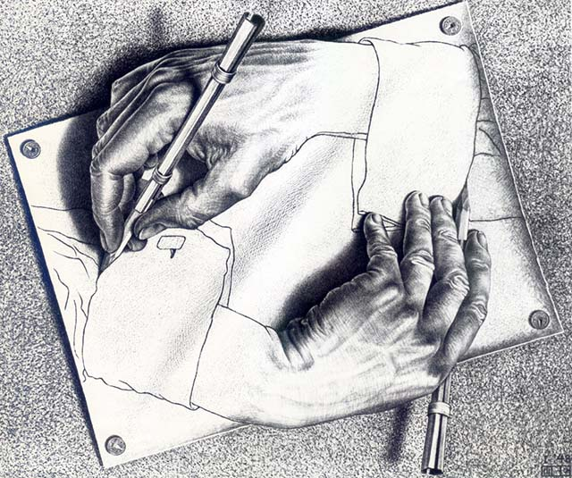
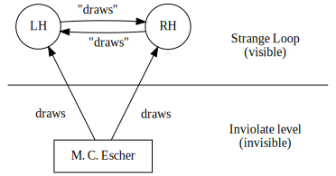
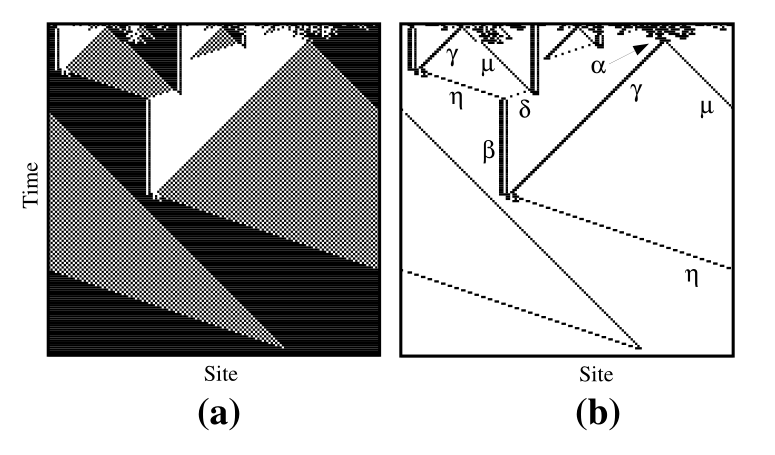

Co-author: Leonardo Lana de Carvalho
Universidade Federal dos Vales do Jequitinhonha e Mucuri
March 2021
In our previous work, we established the foundations for the idea of an Autopoietic System (AS).
Our model of an AS is a system produced by consistent processes (e.g. a Turing Machine), giving rise to an emergent, inconsistent, open-ended environment.
Such environment has a property of completeness, and its autonomous processes would lead to bifurcations/contradictions and self-organization through paradoxical actions, possibly leading to new, emerging consistent processes adrift in said environment.
This leads to an idea closely resembling that of a Strange Loop (HOFSTADTER, 1979).

Figure 1: Drawing Hands, by M. C. Escher (litography, 1948).

Figure 2: Abstract diagram for Drawing Hands, by M. C. Escher (HOFSTADTER, 1979, p. 690, adapted)
We aim to continue our previous work, by pointing two impediments to computational and logico-mathematical modelling of an AS, and present possible solutions to those impediments which may impact the development of models for AS in general.
Agents as fluid framings of actions in an autopoietic environment. Agents can also be understood as individuals.
This can be very abstract, and may demand analogies for comprehension.
Humans tend to seek examples of agents and environments through antropomorphization and examples in biology.
Furthermore, experimentation and analysis tend to begin with the agents and, from there, we analyze lexical convergence and other factors.
We should step back and talk about how agents may arise in an autopoietic context.
We understand that
It is imperative to seek more precise tools for recognition of those "framings" of actions – the agents (here, individuals in an AS).
Biological and antropomorphical analogies are desired but may contaminate the conclusion of whether a system is autopoietic or not.
It is possible to develop more precise tools for recognition of enactive agents in an open-ended environment, using information theory as basis.
(…) individuals are aggregates that "propagate" information from the past to the future and have temporal integrity (…) (KRAKAUER et al., 2020)

Figure 3: Space-time diagram of \(\phi_{100}\), a cellular automaton discovered by genetic algorithms (MITCHELL, 1998).
For that, we would seek fundamental properties of individuality, apart from seeking properties derived from individuality.
Krakauer et al. (2020) propose criteria defining individuality:
These considerations remove a dichotomy of a process being an individual or not, and relate to the enactive ideas of coupling and natural drift.
Individuation analysis would then seem like a lens; adjusting the lens's focus and direction would also impact on observed individuals, and how "individual" they are, but not on the criteria for individuality.
An AS is composed of potentially consistent individuals arisen and adrift on an inconsistent context.
Modelling this kind of situation (computationally and algebraically) becomes inevitable at some point.
Since the context harbors contradictions, formalization seems incompatible due to the principle of explosion; a contradictory system leads to uselessness.
However, in paraconsistent systems, the principle of explosion does not hold (CIUCIURA, 2020).
It is possible to formalize a system where paradoxes are partially tolerated.
Ciuciura (2020) shows the usage of a gently paraconsistent logic, where a law of "gentle explosion" is added to positive propositional calculi.
In gently paraconsistent logic, the principle of explosion holds if, and only if:
This kind of reasoning approaches inductive logic, allowing contradictions such as \(A \land \lnot A\), which lead to explosion if and only if the (now not-excluded) middle is proven true.
This could be a proper framework for expressing consistent logic from theorems that can handle contradictions from the perspective of classical logic.
As future perspectives, we aim to develop computational models and algebraic representations for Autopoietic Systems by leveraging the criteria of individuality from the information theory perspective and paraconsistent logic.
CARVALHO, L. L.; PEREIRA, D. J; COELHO, S. A. Origins and evolution of enactive cognitive science: Toward an enactive cognitive architecture. Science Direct, volume 16, pp. 169–17. 2015. DOI: 10.1016/j.bica.2015.09.010.
CIUCIURA, J. Gently paraconsistent calculi. 2020. DOI: 10.3390/axioms9040142.
HOFSTADTER, D. R. Gödel, Escher, Bach: An eternal golden braid. New York: Basic Books, 1979. ISBN 978-0-465-02656-2.
KRAKAUER, D.; BERTSCHINGER, N.; OLBRICH, E.; FLACK, J. C. The information theory of individuality. Theory in Biosciences, 2020. DOI: 10.1007/s12064-020-00313-7.
MITCHELL, M. A Complex-Systems Perspective on the "Computation vs. Dynamics" Debate in Cognitive Science. 1998. Link.
NAGEL, E.; NEWMAN, J. R. Gödel's proof (revised edition). New York: New York University Press, 2001. ISBN 0-8147-5816-9.